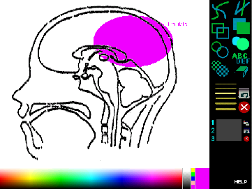
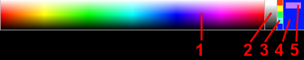
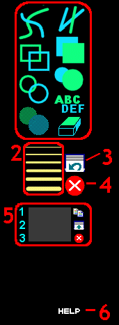
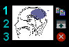
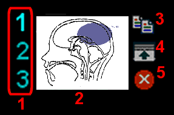
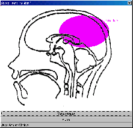

- 1.1. 黒板
- 1.2. Colorpicker
- 1.2.1. 色パレット
- 1.2.2. グレイスケールパレット
- 1.2.3. 古い色セット
- 1.2.4. 現在の色
- 1.2.5. 新しい色試写
- 1.3. メニュー
- 1.3.1. ツール
- 1.3.2. 線の太さ
- 1.3.3. アンドゥボタン
- 1.3.4. リセットボタン
- 1.3.5. クリップボード
- 1.3.6. ヘルプボタン
- 1.4. クリップボード
1. マニュアルの操作

1.1. 黒板
ここに、症状、コメント等を記入します。メニューのツールを使って、黒板に記入することができます。色はcolorpickerで選択します。
1.2. Colorpicker

1.2.1. 色パレット
使用する色をセットします。使用する色をクリックして色をセットします。
1.2.2. グレイスケールパレット
純粋な白い色および黒い色を含んでいます。使用する色をクリックして色をセットします。
ただし、ツールのテキスト・ツール以外は、黒い色を使用できません。また、テキスト・ツールには白い色が使用できません。
1.2.3. 古い色セット
現在使用している色よりも以前にセットした色から色をセットします。
1.2.4. 現在の色
この長方形は現在の色を示します。色パレット、グレイスケールパレットあるいは古い色セットのクリックにより、新しい色を選択することができます。
1.2.5. New色試写
この小さな長方形は、カーソルの下の色を示します。これは、新しい色を選択するのを助けます。
1.3. メニュー

1.3.1. ツール
|
|
手書きツール。手書きの線を引くには、ドラッグしながら、マウスを移動すると線が引けます。 |
| ラインツール。ラインのスタートをセットするためにクリックして、ラインの終了へマウスを引きずって、再度クリックするとラインが引けます。 |
| 長方形・ツール。1つの角をセットするためにクリックして、反対の角ポイントにマウスをドラッグし、再度クリックすると長方形が書けます。 |
| 塗りつぶし長方形ツール。長方形ツールを参照してください。 |
| 楕円ツール。中心ポイントをセットするためにクリックして、楕円サイズを定義サイズまでドラッグし再度クリックすると楕円が書けます。 |
| 塗りつぶし楕円ツール。楕円ツールを参照してください。 |
| スプレーツール。楕円ツールを参照してください。 |
| テキストツール。場所指定し、キーボードで文字を入力すると文字が書けます。 |
| 消しゴムツール。消去したい場所をマウスでクリックして、ドラッグすると消去できます。 |
1.3.2. 線の太さ
線の厚さをセットするために希望のラインをクリックしてください。厚さを選択することができるツールは、手書き、ライン、長方形と楕円のツールです。
1.3.3. アンドゥボタン
黒板を、クリップボード試写のイメージに戻します。クリップボード試写にイメージがない場合は、全体のイメージがリセットされます。
1.3.4. リセットボタン
全体のイメージをリセットします。
1.3.5. クリップボード

1.3.6. ヘルプボタン
新しいウィンドウが表示され、Drawboardについての説明が表示されます。
1.4. クリップボード

※拡大して表示しています。
1.4.1. クリップボードセレクター
3つのクリップボードを持っています。 1 、 2 そして 3 .現在のクリップボード番号が示されます。希望する番号をクリックしてください。
1.4.2. クリップボード試写
ここに、クリップボード内容のミニチュアを見れます。
1.4.3. コピーボタン
黒板のイメージをクリップボードへコピーします。
1.4.4. ショークリップボードボタン

クリップボードのイメージを見る場合にクリックします。新しいウィンドウが表示され、クリップボードのイメージが見れます。表示したイメージを保存する場合は「Save image」ボタンをクリックします。
1.4.5. クリアボタン
このボタンをクリックすると、選択したクリップボードをリセットします。